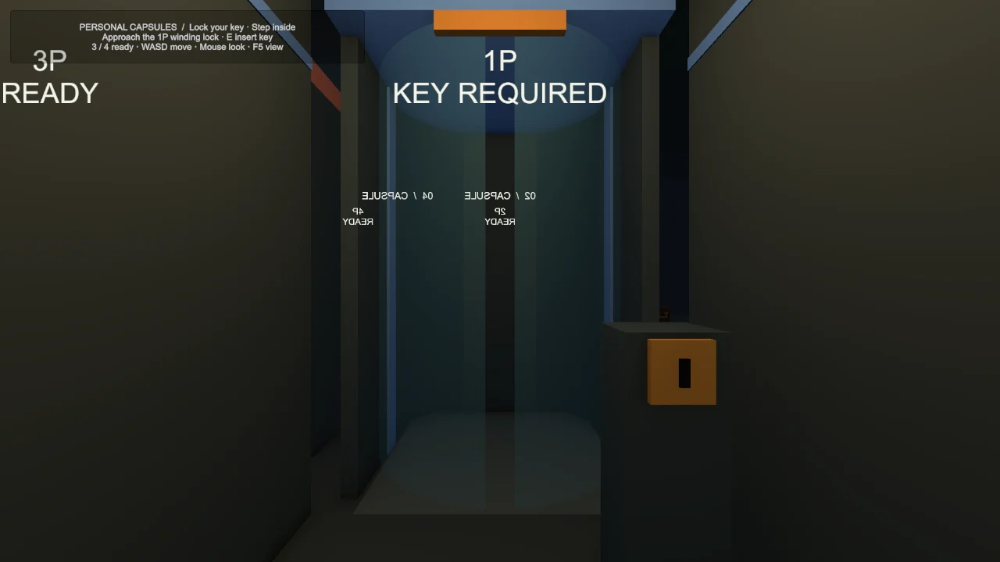
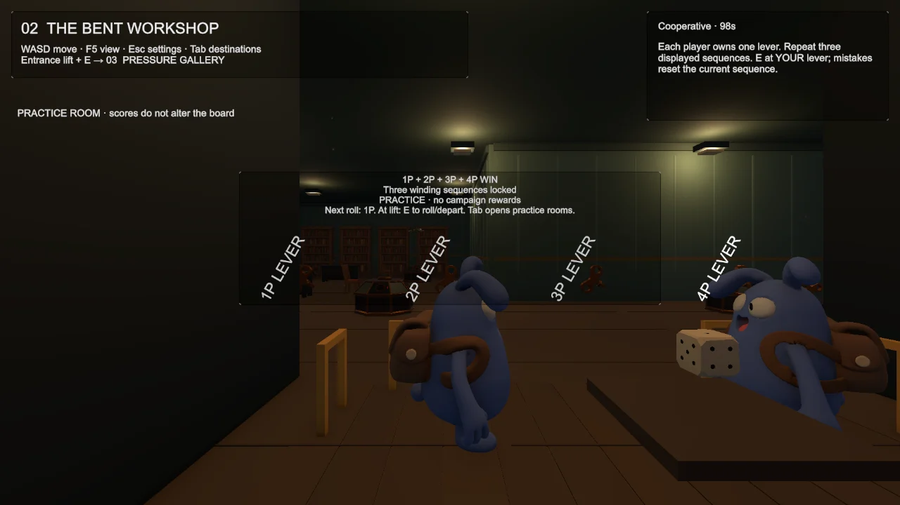

캡슐 준비·취소·출발, F5 3인칭, 방 이동, 공방 협동 성공. 19개 공간의 런타임 생성 누락·예외 0.
A LITTLE WORLD, IN PROGRESS
Cube Escape
제작 노트.
네 마리 토끼, 주사위 하나.
방을 옮길 때마다 다른 게임이 시작되는 작은 세계.
게시 갱신 2026-11-15 02:30 KST

방 시안 & 배치
방 전체 → 소품 배치 → 실제 조립.
갤러리 열기 →02 / OBJECTS새 오브젝트
21묶음의 물건과 가동부 미리보기.
갤러리 열기 →03 / CHARACTERS캐릭터 & 모션
네 체형의 맨몸 모델과 수정 후보.
갤러리 열기 →04 / ARCHIVE전체 제작 기록
기존 59항목, 이전 시안·모션·효과음.
기록 열기 →PLAY CHECK / 2026.11.15
실제로 움직이는 곳까지.
개인 태엽 삽입 → 자기 캡슐 탑승 → 전원 준비 → 아래로 하강 → 주사위 방 → 미니게임 방.
새 몸체와 독립 스킨의 게임 적용, 손·팔·춤·착석, 최종 캡슐 아트, 각 방 규칙과 충돌·음향·밸런스.



19개 공간 생성 확인은 18개 미니게임 전체 완주를 의미하지 않습니다. 현재 실행 모델은 기존 파랑+가방이며 새 캐릭터 후보와 구분합니다. 이 사이트는 제작 보고서입니다.
19개 공간과 연결된 미니게임 규칙 보기
주사위·보드 방
주사위 · 다음 목적지 선택
26 × 26m · 직사각 · JSON 배치 45개꺾인 태엽 공방
Clockwork sequence · 협동 · 150초
24 × 26m · L형 · JSON 배치 34개긴 압력 갤러리
Pressure quartet · 협동 · 150초
14 × 42m · 직사각 · JSON 배치 23개분실물 분류실
Parcel relay · 2대2 · 120초
30 × 30m · T형 · JSON 배치 25개십자형 충전실
Four-cell reactor · 협동 · 150초
26 × 30m · 십자형 · JSON 배치 30개달빛 수정 온실
Moonwell recipe · 협동 · 150초
28 × 28m · 팔각형 · JSON 배치 28개우주 정비 교차로
Orbital impostor · 비밀 역할 · 180초
28 × 28m · 십자형 · JSON 배치 22개보급창 전투방
Last supply · 개인전 · 120초
40 × 46m · 직사각 · JSON 배치 72개팔각 결투장
Brass duel · 2대2 · 90초
28 × 28m · 팔각형 · JSON 배치 12개긴 씨앗 협곡
Seed siege · 2대2 · 180초
28 × 64m · 직사각 · JSON 배치 32개정전 발전소
Blackout escape · 협동 · 240초
22 × 34m · L형 · JSON 배치 22개테이블 게임실
Pair Gomoku · 2대2 · 180초
18 × 18m · 직사각 · JSON 배치 24개바닥 없는 절벽
Cliff rescue · 협동 · 240초
28 × 44m · 직사각 · JSON 배치 0개심연 유리다리
Glass crossing · 개인전 · 180초
20 × 110m · 직사각 · JSON 배치 0개태엽 카트 서킷
Windup circuit · 개인전 · 150초
54 × 74m · 팔각형 · JSON 배치 20개블러핑 살롱
Bluff salon · 개인전 · 150초
24 × 18m · 직사각 · JSON 배치 35개전투 체스 코트
Living chess · 2대2 · 150초
24 × 28m · 팔각형 · JSON 배치 4개태엽 벌레 정원
Clockmite survival · 협동 · 120초
36 × 40m · 팔각형 · JSON 배치 36개색상 회전무대
Colour sweep · 개인전 · 75초
26 × 30m · 팔각형 · JSON 배치 7개ROOM ART / CANDIDATES
어떤 방을 만들고 있나.
전체 분위기부터 물건을 놓는 이유까지. 아래는 시안과 Blender 조립 후보이며, 게임 반영 상태는 위 Play 기록과 따로 표시합니다.


CHARACTER POLISH / WORK IN PROGRESS
몸체는 그대로, 치장은 따로.
체형과 얼굴을 유지한 네 기본 몸체입니다. 기본색은 중립색으로 두고 가방·스카프·머리띠·파우치는 독립 착용물로 준비했습니다.


청록 · 손과 팔 FK 비교 동작
본 길이와 손바닥 형태를 유지하는 작은 비교 동작입니다. 요청한 웃긴 춤 3종의 완성본은 아닙니다. 바닥 지지 춤과 착석 전환은 계속 수정합니다.
캐릭터 수정 상태 자세히 →11/15 · NEW REVISION / CANDIDATE
발을 딛고 뒤돌기 · 청록 v4
여섯 번의 작은 스텝으로 뒤돌고 두 손을 짚는12초 수정 후보입니다. 발 접지와 전환 속도를 다듬고 골반 보조 본을 더했습니다. 원형 메시·팔 길이·손바닥 가중치는 유지했습니다.
깊이 숙인 배 실루엣과 목·어깨 경계는 추가 피팅 대상입니다. 다른 체형·착석·게임 적용 전이며 완성판은 아닙니다.
반복 미리보기와 자세 검토 →